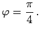

Inhalt Index DeskTop Bronstein
Funktionen und ihre Darstellung Areafunktionen
Die Funktion
ist eine ungerade, streng monoton wachsende Funktion.
Die Schreibweise ist gleichbedeutend mit Die Funktion besitzt im Koordinatenursprung einen Wendepunkt mit dem Steigungswinkel 